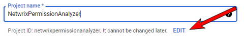
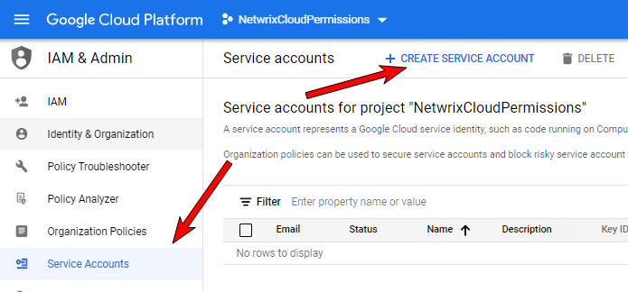
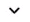

To authenticate to your Google Workspace (formerly known as G Suite) domain to perform crawling, Netwrix uses the OAuth 2.0 protocol. Data in individual and shared Drives will be accessed using the Google Drive API. You will need to create a service account and authorize it to access data on behalf of the user.
To configure G Suite for crawling, you should take the following steps (explained
later in detail):
In the Google Cloud Platform web console
- Create a new project.
- Create a new service account.
- Create a service account key (JSON, save a copy for the data source configuration).
- Enable domain-wide delegation for the service account (write down the Client ID).
- Enable the Google Drive API and the Admin SDK API.
In the G Suite Admin Console
- Authorize service account to access the Google Drive API
Configure Google Workspace for crawling
Step 1. Create a new project
- Log in to the Google Cloud Platform web console: https://console.cloud.google.com/ as a G-Suite administrator.
- Click Select a project. In the Select a project dialog, click New Project:
-
In the dialog, specify the following:
-
Project name — "NetwrixPermissionAnalyzer".
- IMPORTANT! Provide a meaningful name for your project without spaces. Pay attention to the Project ID below and make sure it is identifiable for you since you cannot edit it later.
- 
- Organization — provide your organization's domain.
- Location — provide your parent organization or folder.
-
Project name — "NetwrixPermissionAnalyzer".
- Click Create.
Step 2. Create a new service account
- Click the Google Cloud Platform icon.
- Navigate to IAM & Admin → Service Accounts.
- Click Create Service Account:

-
In the Create service account dialog, provide the Service account details:
- Service account name — new service account name. For example, "Netwrix Permission Analyzer Service Account".
- Service account ID — is set automatically.
- Service account description — description if needed.
- Click Done.
Step 4. Create a service account key
- On the Service accounts page, click the newly created service account.
- In your account configuration wizard, go to the Keys tab.
- Expand the Add Key list and select Create new key option.
- In the Create private key for <Service account name> dialog, select JSON format.
- The key will be downloaded automatically. Save the file to a known location as it will be required later.
NOTE: Your new public / private keypair is generated and downloaded to your machine. Store it securely. If you lose this keypair, you will need to generate a new one.
Step 5. Delegate domain-wide authority to the service account
- Go back to your service account Details tab.
- Expand Show Domain-Wide Delegation and tick the Enable G Suite Domain-wide Delegation checkbox.
- Provide a product name. For example, "NetwrixPermissionAnalyzer" (if you have already configured a service account, Google ignores this step).
- Click Save.
- Once completed, make sure that "Domain-wide delegation" is enabled for the account.
- Click the View Client ID link.
Step 6. Enable the Google Drive API and Admin SDK API
- Click the Google Cloud Platform icon to back to the home page.
- Navigate to APIs&Services on the left, and select the Dashboard menu.
- Click Enable APIs and Services at the top.
NOTE: If you already have any enabled APIs and/or Services in your project, skip this step and proceed with the instructions below.
- Search for Google Drive API and click Enable (or Manage if you have this API in your project).
-
If you are going to process large amounts of data, Netwrix recommends you setting quotas
for this API (OPTIONAL):
- On the Google Drive API page, select the Quotas menu on the left.
- Expand queries by clicking on the right.
- Find the Queries per 100 seconds per user line and click to edit.
- Set the quota limit to "10,000" and save your changes.
- IMPORTANT! Go back to APIs&Services → Dashboard and repeat steps 2 - 3 to enable the Admin SDK API. If you have this API in your project, skip this step, and proceed.
Step 7. Configure domain-wide delegation to a new API client
- Switch to the G Suite Admin Console: https://admin.google.com/
- Navigate to Security → API Controls → Domain-wide delegation.
- On the API controls page, click Manage domain-wide delegation at the bottom.
- Click Add new to add a new API client.
- In the Add a new client ID dialog, provide the ID you copied earlier (see the corresponding step)
- Then, specify necessary scopes in the OAuth scopes field. These can be:
https://www.googleapis.com/auth/drive.readonly, https://www.googleapis.com/auth/admin.directory.domain.readonly, https://www.googleapis.com/auth/admin.directory.user.readonly, https://www.googleapis.com/auth/admin.directory.group.readonly
NOTE: For your convenience, the scopes are listed as comma-delimited. Google splits them accordingly, so you can paste the whole list to a field right from this article.
- Click Authorize. Wait for Google to recognize the scopes and then click Authorize again to apply.
What is next:
- Log in to Netwrix Cloud Permission Analyzer.
- Read the Get Started section. Click Continue.
- In the Google Drive connection settings, provide the Google Drive administrator account under which you logged in to the Google Cloud Platform web console.
- Click Import JSON file with Google service account settings and select the file you downloaded on step 4.
- IMPORTANT! Configure scope – add your shared and/or personal Google Drives to the list. You can use a wildcard (*) if you want to crawl all drives in your Google Drive.